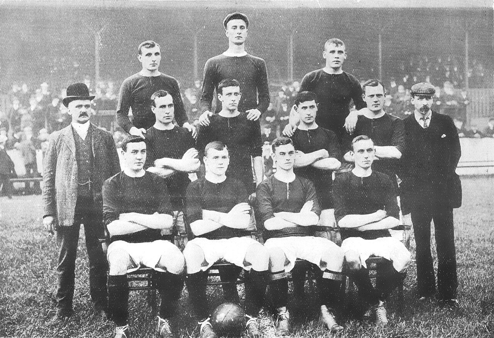
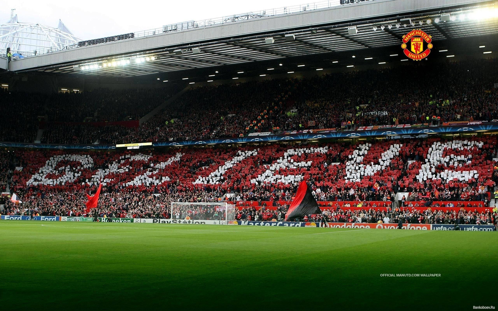

Manchester United

adalah sebuah klub sepak bola profesional yang berbasis di Old Trafford, Manchester Raya, yang bermain di Liga Utama Inggris dengan gelar Liga Utama Inggris terbanyak sepanjang masa. Didirikan sebagai Newton Heath LYR Football Club pada tahun 1878, klub ini berganti nama menjadi Manchester United pada 1902 dan pindah ke Old Trafford pada tahun 1910. Manchester United telah memenangkan banyak trofi di sepak bola Inggris, termasuk 20 gelar Liga—terbanyak dalam sejarah, 12 gelar Piala FA, 6 gelar Piala Liga dan 21 gelar Community Shield FA—juga terbanyak dalam sejarah. Klub ini juga telah memenangkan tiga gelar Piala/Liga Champions, satu Liga Eropa UEFA, satu Piala Winners UEFA, satu Piala Super UEFA, satu Piala Interkontinental, dan satu Piala Dunia Antarklub FIFA—klub Inggris pertama yang menjuarai ajang ini. Pada musim 1998–1999, klub ini memenangkan treble (trigelar) dari Liga Utama, Piala FA, dan Liga Champions; prestasi ini belum pernah terjadi sebelumnya untuk klub Inggris. Manchester United juga merupakan salah satu klub tersukses sepanjang masa di Inggris. Bencana Udara München 1958 merenggut nyawa delapan pemain. Pada tahun 1968, di bawah manajemen Matt Busby, Manchester United adalah klub sepak bola Inggris pertama yang memenangkan Piala Eropa. Sedangkan Alex Ferguson memenangkan total 38 gelar utama, dari bulan November 1986 sampai Mei 2013,[4][5] ketika ia mengumumkan pensiun setelah 26 tahun di klub. Rekan senegaranya David Moyes diangkat sebagai penggantinya pada tanggal 9 Mei 2013 namun ia dinilai gagal dan tak lama kemudian dipecat. Manchester United adalah klub sepak bola terkaya ketiga di dunia untuk 2011–12 dalam hal pendapatan, dengan pendapatan tahunan sebesar €395.9 juta, dan kedua klub paling berharga tahun 2013, senilai $3.165 miliar. Pada bulan Januari 2015 lalu, Manchester United dinobatkan sebagai klub terkaya kedua di dunia,[8] Ini adalah salah satu tim sepak bola yang paling banyak didukung di dunia.[9][10][11] Setelah sahamnya tercatat di London Stock Exchange pada tahun 1991, klub itu dibeli oleh Malcolm Glazer pada Mei 2005 di kesepakatan menilai klub di hampir £800 juta.[12] Pada bulan Agustus 2012, Manchester United melakukan penawaran umum perdana di Bursa Efek New York.
Sejarah
Tim pertama kali dibentuk dengan nama Newton Heath Lancashire and Yorkshire Railway F.C. pada 1878 sebagai tim karya Lancashire dan Yorkshire, stasiun kereta api di Newton Heath. Kaus tim berwarna hijau - emas. Mereka bermain di sebuah lapangan kecil di North Road, dekat stasiun kereta api Piccadilly Manchester selama lima belas tahun, sebelum pindah ke Bank Street di kota dekat Clayton pada 1893. Tim sudah memasuki kompetisi sepak bola tahun sebelumnya dan mulai memutuskan hubungannya dengan stasiun kereta api, menjadi perusahaan mandiri, mengangkat seorang sekretaris perkumpulan dan pengedropan "L&YR" dari nama mereka untuk menjadi Newton Heath F.C saja. Tak lama kemudian, pada tahun 1902, tim nyaris bangkrut, dengan utang lebih dari £2500. Lapangan Bank Street mereka telah ditutup.Pada Januari 1902, dengan utang £ 2.670 - setara dengan £ 250.000 per 2014 - klub itu disajikan dengan urutan berliku, Sebelum tim mereka bubar, mereka menerima investasi dari J. H. Davies[ket 1], direktur Manchester Breweries. Awalnya, seorang legenda tim, Harry Stafford, yang merupakan kapten tim, memamerkan anjing St. Bernard nya[ket 2], kemudian Davies memutuskan untuk membeli anjing itu. Stafford menolak, tetapi berhasil memengaruhi Davies untuk menanamkan modal pada tim dan menjadi chairman tim.[16] Diadakan rapat untuk mengganti nama perkumpulan. Manchester Central dan Manchester Celtic adalah nama yang diusulkan, sebelum Louis Rocca, seorang imigran muda asal Italia, berkata "Tuan-tuan, mengapa kita tidak menggunakan nama Manchester United?" Nama ditetapkan dan Manchester United secara resmi eksis mulai 26 April 1902. Davies juga memutuskan untuk mengganti warna tim dan terpilihlah warna merah dan putih sebagai warna tim Manchester United.Ernest Mangnall ditunjuk menjadi sekretaris klub menggantikan James West yang mengundurkan diri pada tanggal 28 September 1902. Mangnall bekerja keras untuk mengangkat tim ke Divisi Satu dan gagal pada upaya pertamanya, menempati urutan 5 Liga Divisi Dua. Mangnall memutuskan untuk menambah sejumlah pemain ke dalam klub dan merekrut pemain seperti Harry Moger, Dick Duckworth, dan John Picken, ada juga Charlie Roberts yang membuat dampak besar. Dia dibeli £750 dari Grimsby Town pada April 1904, dan membawa tim ke posisi tiga klasemen akhir musim 1903-1904. Mereka kemudian berpromosi ke Divisi Satu setelah finis di urutan dua Divisi Dua musim 1905–06. Musim pertama mereka di Divisi Satu berakhir kurang baik, mereka menempati urutan 8 klasemen. Akhirnya mereka memenangkan gelar liga pertamanya pada tahun 1908. Manchester City sedang diselidiki karena menggaji pemain di atas regulasi yang ditetapkan FA. Mereka didenda £250 dan delapan belas pemain mereka dihukum tidak boleh bermain untuk mereka lagi. United dengan cepat mengambil kesempatan dari situasi ini, merekrut Billy Meredith dan Sandy Turnbull, dan lainnya. Pemain baru ini tidak boleh bermain dahulu sebelum tahun Baru 1907, akibat dari skors dari FA. Mereka mulai bermain pada musim 1907–08 dan United membidik gelar juara saat itu. Kemenangan 2–1 atas Sheffield United memulai kemenangan beruntun sepuluh kali United. Namun pada akhirnya, mereka tutup musim dengan keunggulan 9 poin dari rival mereka, Aston Villa. Klub membutuhkan waktu dua tahun untuk membawa trofi lagi, mereka memenangkan trofi Liga Divisi Satu untuk kedua kalinya pada musim 1910–11. United pindah ke lapangan barunya Old Trafford. Mereka memainkan pertandingan pertamanya di Old Trafford pada tanggal 19 Februari 1910 melawan Liverpool, tetapi mereka kalah 4-3. Mereka tidak mendapat trofi lagi pada musim 1911–12, mereka tidak didukung oleh Mangnall lagi karena dia pindah ke Manchester City setelah 10 tahunnya bersama United. Setelah itu, mereka 41 tahun bermain tanpa memenangkan satu trofi pun. Pada tahun 1922, tiga tahun setelah pembukaan kembali sepak bola setelah Perang Dunia Pertama, klub itu terdegradasi ke Divisi II, di mana ia tetap sampai mendapatkan kembali promosi pada tahun 1925. Terdegradasi lagi pada tahun 1931, Manchester United menjadi klub yo-yo, mencapai posisi sepanjang masa terendah tempat ke-20 di Divisi II pada tahun 1934. Setelah kematian dermawan utama klub, J. H. Davies, pada bulan Oktober 1927, keuangan klub memburuk sejauh bahwa Manchester United kemungkinan akan bangkrut kalau bukan untuk James W. Gibson, pada bulan Desember tahun 1931, investasi £2,000 dan memegang kendali klub. Pada musim 1938-39, tahun terakhir sepak bola sebelum Perang Dunia Kedua, klub selesai di posisi 14 Divisi Pertama.
OldTrafford
Old Trafford adalah sebuah stadion sepak bola yang berlokasi di Old Trafford, Greater Manchester, Inggris, dan merupakan markas klub Manchester United. Dengan kapasitas sekitar 76.000 kursi,[2] stadion ini merupakan stadion terbesar ketiga dan stadion sepak bola terbesar kedua di Inggris setelah Stadion Wembley, serta stadion kesembilan terbesar di Eropa.[3]Stadion ini terletak sekitar 05 mil (8.000 m) dari Lapangan Kriket Old Trafford dan stasiun trem terdekat. Old Trafford yang dijuluki "The Theatre of Dreams" oleh Sir Bobby Charlton,[4] telah menjadi markas MU sejak 1910, walau sejak 1941 hingga 1949, klub berbagi Maine Road dengan rival lokal Manchester City pasca kerusakan akibat pengeboman pada Perang Dunia II. Old Trafford mengalami beberapa kali ekspansi pada 1990-an dan 2000-an, termasuk penambahan tambahan tingkat di Tribune Utara, Barat, dan Timur, yang membuat stadion kembali ke kapasitas aslinya, 80.000. Ekspansi ke depannya dapat termasuk penambahan tingkat kedua di Tribune Selatan, yang dapat meningkatkan kapasitas menjadi 90.000. Rekor kehadiran stadion tercatat pada 1939, saat 76.962 orang menghadiri semifinal Piala FA antara Wolverhampton Wanderers dan Grimsby Town. Old Trafford menyelenggarakan semifinal Piala FA, pertandingan Inggris, pertandingan pada Piala Dunia 1966 dan Piala Eropa 1996, serta Final Liga Champions UEFA 2003, demikian pula dengan pertandingan tahunan liga rugbi, Grand Final Liga Super[5] serta dua final Piala Dunia Liga Rugbi. Stadion ini juga menjadi penyelenggara cabang sepak bola pada Olimpiade Musim Panas 2012, termasuk sepak bola internasional wanita untuk pertama kalinya dalam sejarahnya.
Sir Alex Ferguson
Sir Alexander Chapman "Alex" Ferguson CBE (lahir 31 Desember 1941) adalah seorang pelatih dan mantan pemain sepak bola berkebangsaan Skotlandia, yang pernah menangani Manchester United, Sir Alex dianggap sebagai salah satu pelatih terbaik dalam sejarah, dia telah memenangkan lebih banyak trofi daripada pelatih manapun sepanjang sejarah sepak bola Inggris. Dia telah menangani Manchester United sejak tanggal 6 November 1986 hingga 2013, menggantikan Ron Atkinson. Di Manchester United, Sir Alex menjadi pelatih tersukses dalam sejarah sepak bola Inggris, dengan memimpin tim memenangkan 13 gelar juara liga. Pada 1999, dia menjadi pelatih pertama yang membawa tim Inggris meraih treble dari Liga Utama, Piala FA and Liga Champions UEFA. Juga menjadi satu-satunya pelatih yang memenangkan Piala FA sebanyak 5 kali, Fergie juga menjadi satu-satunya pelatih yang berhasil memenangkan gelar Liga Inggris sebanyak 3 kali berturut-turut bersama tim yang sama (1998-1999, 1999-2000 and 2000-2001). Pada 2008, dia bergabung bersama Brian Clough (Nottingham Forest) dan Bob Paisley (Liverpool) sebagai pelatih Britania yang pernah memenangkan kejuaraan Eropa sebanyak lebih dari satu kali. Ferguson resmi menyatakan pensiun sebagai pelatih United pada 9 Mei 2013. Posisinya digantikan oleh David Moyes terhitung mulai 1 Juli 2013.Alexander Chapman Ferguson lahir dari pasangan Alexander Beaton Ferguson, seorang buruh pekerja galangan kapal dengan Elizabeth Hardie. Ia menghabiskan masa kecilnya di daerah Govan,Skotlandia bersama adiknya Martin Ferguson.
Sponsor
Dalam lima tahun pertama kesepakatan senilai £500.000, Sharp menjadi sponsor kostum pertama klub pada awal musim 1982–1983, hubungan yang berlangsung hingga akhir musim 1999–2000, ketika Vodafone menyetujui kesepakatan empat tahun senilai £30 juta. Vodafone setuju untuk membayar £36 juta untuk memperpanjang kesepakatan selama empat tahun, tetapi setelah dua musim membatalkannya untuk berfokus menjadi sponsor Liga Champions UEFA. Untuk memulai pada awal musim 2006–2007, perusahaan asuransi Amerika AIG menyetujui kesepakatan empat tahun senilai £56,5 juta yang pada bulan September 2006 menjadi yang paling mahal di dunia. Pada awal musim 2010–2011, perusahaan reasuransi Amerika Aon menjadi sponsor utama klub dalam kesepakatan empat tahun bernilai sekitar £80 juta, sehingga kesepakatan sponsor kaus yang paling menguntungkan dalam sejarah sepak bola. Manchester United mengumumkan kostum sponsor pelatihan pertama mereka pada bulan Agustus 2011, menyetujui kontrak empat tahun dengan DHL yang dilaporkan bernilai £40 juta, dan diyakini menjadi contoh pertama dari kostum berlatih dengan sponsor dalam sepak bola Inggris. Produsen kostum pertama klub adalah Umbro, sampai kontrak lima tahun disepakati dengan Admiral Sportswear pada tahun 1975. Adidas menerima kontrak pada tahun 1980, sebelum Umbro mulai mantra kedua pada tahun 1992. Sponsorship Umbro yang berlangsung selama sepuluh tahun, diikuti dengan memecahkan rekor £302.900.000 kesepakatan Nike yang akan berlangsung sampai dengan tahun 2015, 3,8 juta replika kaus yang dijual di 22 bulan pertama dengan perusahaan. Selain Nike dan Aon, klub juga memiliki beberapa tingkat rendah "platinum" sponsor, termasuk Chevrolet dan Budweiser. Pada tanggal 30 Juli 2012, United menandatangani kontrak tujuh tahun dengan perusahaan otomotif Amerika General Motors, yang menggantikan Aon sebagai sponsor kaus dari musim 2014–2015. Kesepakatan menampilkan logo merek Chevrolet. Dan pada tanggal 15 Juli 2014, United mengumumkan rekor 10 tahun kontrak seragam senilai £750 juta atau setara Rp15 triliun dengan aparel raksasa Jerman, Adidas yang dahulu pernah menjalin kerja sama pada akhir 1980-an hingga awal 1990-an. Kepastian ini mengakhiri hubungan kemitraan United dengan Nike yang sudah berjalan selama 13 tahun. Dengan demikian, jersey United yang dipakai musim 2014–2015 menjadi yang terakhir menggunakan produk aparel asal Amerika Serikat itu sebelum kembali mengenakan Adidas pada musim berikutnya. Kontrak United tersebut mematahkan kontrak senilai £248 juta untuk durasi 8 tahun antara Adidas dan raksasa Spanyol, Real Madrid, serta kesepakatan £30 juta selama 5 tahun antara aparel asal Jerman lainnya, Puma dengan klub asal kota London, Arsenal.
Tentang Kami

Julukan:The Red Devils (Setan Merah).
Manager:Erig ten Hag.
Stadion:Old Trafford (kapasitas:74.310).
Jersey Musim 2023-2024

Ikuti Kami
Instagram:@manchesterunited
Youtube:Manchester United